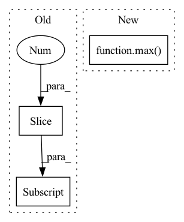

Pattern ID :39337
Before Change
return f"scale={self.scale}, ratio={self.ratio}"
def __call__(self, img: Any, target: Dict[str, np.ndarray]) -> Tuple[Any, Dict[str, np.ndarray]]:
h, w = img.shape[:2]
scale = random.uniform(self.scale[0], self.scale[1])
ratio = random.uniform(self.ratio[0], self.ratio[1])
crop_h = math.sqrt(scale * ratio)
crop_w = math.sqrt(scale / ratio)After Change
xmin, ymin = random.uniform(0, 1 - crop_w), random.uniform(0, 1 - crop_h)
xmax, ymax = xmin + crop_w, ymin + crop_h
// Clip them
xmin, ymin = max( xmin, 0) , max(ymin, 0)
xmax, ymax = min(xmax, 1), min(ymax, 1)
croped_img, crop_boxes = F.crop_detection(img, target["boxes"], (xmin, ymin, xmax, ymax))In pattern: SUPERPATTERN
Frequency: 4
Non-data size: 3
Instances Fragment ID: 111559687
Project Name: mindee/doctr
Commit Name: f5b6375507ace7ec9f5666cde4e3fb2b938373ed
Time: 2021-12-29
Author: 76527547+fg-mindee@users.noreply.github.com
File Name: doctr/transforms/modules/base.py
M Class Name: RandomCrop
N Class Name: RandomCrop
M Method Name: __call__(3)
N Method Name: __call__(3)
M Parent Class: NestedObject
N Parent Class: NestedObject
M File Name: doctr/transforms/modules/base.py
N File Name: doctr/transforms/modules/base.py
M Start Line: 177
M End Line: 189
N Start Line: 180
N End Line: 188
Before Change
// NULL has already been filtered
prev = IdxPair(pairs[0].src.id, pairs[0].tgt.id)
for pair in pairs[1:] :
if not (
(pair.src.id == prev.src + 1 and pair.tgt.id == prev.tgt + 1)
or (pair.src.id == prev.src and pair.tgt.id == prev.tgt + 1)After Change
@staticmethod
def idxs_are_consecutive(idxs: List[int]):
return sorted(idxs) == list(range(min(idxs), max( idxs) +1))
def add_null_aligns(self):
// Fill in 0 idx for words that are not aligned Fragment ID: 111559701
Project Name: bramvanroy/astred
Commit Name: 7c23779d00d2997039927856df921d4dedb421ae
Time: 2021-02-17
Author: Bram.Vanroy@UGent.be
File Name: astred/aligned.py
M Class Name: AlignedSentences
N Class Name: AlignedSentences
M Method Name: idxs_are_consecutive(1)
N Method Name: idxs_are_consecutive(1)
M Parent Class:
N Parent Class:
M File Name: astred/aligned.py
N File Name: astred/aligned.py
M Start Line: 182
M End Line: 198
N Start Line: 190
N End Line: 191
Before Change
bias_1[i, 0 : bias[0].shape[0]] = bias[0]
missing_bias_1[i, 0 : bias[1].shape[0]] = bias[1]
weight_2[i, 0 : weight[2].shape[0], 0 : weight[2].shape[1]] = weight[2]
bias_2[i, 0 : bias[2].shape[0]] = bias[2]
weight_3[i, 0 : weight[3].shape[0], 0 : weight[3].shape[1]] = weight[3]
self.n_trees = n_treesAfter Change
for weight, bias in tree_parameters:
hidden_one_size = max(hidden_one_size, weight[0].shape[0])
hidden_two_size = max( hidden_two_size, weight[1].shape[0])
n_trees = len(tree_parameters)
weight_1 = np.zeros((n_trees, hidden_one_size, n_features))
bias_1 = np.zeros((n_trees, hidden_one_size)) Fragment ID: 111559696
Project Name: microsoft/hummingbird
Commit Name: c525c51060a58cb848a4f866b2d844963ada1f94
Time: 2021-02-02
Author: m.interlandi@gmail.com
File Name: hummingbird/ml/operator_converters/_tree_implementations.py
M Class Name: GEMMTreeImpl
N Class Name: GEMMTreeImpl
M Method Name: __init__(7)
N Method Name: __init__(8)
M Parent Class: AbstractPyTorchTreeImpl
N Parent Class: AbstractPyTorchTreeImpl
M File Name: hummingbird/ml/operator_converters/_tree_implementations.py
N File Name: hummingbird/ml/operator_converters/_tree_implementations.py
M Start Line: 101
M End Line: 156
N Start Line: 106
N End Line: 135
Before Change
def scale_coords(img1_shape, coords, img0_shape):
// Rescale coords1 (xyxy) from img1_shape to img0_shape
gain = img1_shape / max(img0_shape[:2] ) // gain = old / new
// pad_x = np.mod(img1_shape - img0_shape[1] * gain, 32) / 2 // width padding
// pad_y = np.mod(img1_shape - img0_shape[0] * gain, 32) / 2 // height padding
pad_x = (img1_shape - img0_shape[1] * gain) / 2 // width paddingAfter Change
def scale_coords(img1_shape, coords, img0_shape):
// Rescale coords1 (xyxy) from img1_shape to img0_shape
gain = max(img1_shape) / max( img0_shape) // gain = old / new
coords[:, [0, 2]] -= (img1_shape[3] - img0_shape[1] * gain) / 2 // x padding
coords[:, [1, 3]] -= (img1_shape[2] - img0_shape[0] * gain) / 2 // y padding
coords[:, :4] /= gain Fragment ID: 111559691
Project Name: nightsnack/yolobile
Commit Name: e5d11c68ac92c25ff9ee09d25ee4c54274b717d1
Time: 2019-04-22
Author: glenn.jocher@ultralytics.com
File Name: utils/utils.py
M Class Name: AnonimousClass
N Class Name: AnonimousClass
M Method Name: scale_coords(3)
N Method Name: scale_coords(3)
M Parent Class:
N Parent Class:
M File Name: utils/utils.py
N File Name: utils/utils.py
M Start Line: 105
M End Line: 111
N Start Line: 105
N End Line: 107